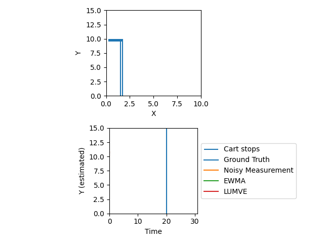

In my last Kalman filtering post, we derived a LUMVE (Linear, Unbiased, Minimum-Variance) estimator for a static object. Then, we showed that we could use that general estimator to make an estimator that incorporates a priori information (a prior best guess) by sort of pretending our prior guess was a measurement. You might be able to guess where we go next: if we can find the covariance matrix $\hat{P}$ for that estimator, then we could take our last estimation and use it as the a priori guess for our next estimation. In other words, we could filter iteratively.
Fortunately, the solution for $\hat{P}$ is very simple! Continuing our trick from last time of using the batch (non a priori) LUMVE estimator and bootstrapping LUMVE into it, we can just notice that all we needed was:
$$\hat{P} = (\tilde{H}^T \tilde{R}^{-1} \tilde{H})^{-1} = (H^T R^{-1} H + \bar{P}^{-1})^{-1}$$
We’re now ready to do our first Kalman-esque filter, which can provide an optimal linear estimate of a stationary value! Our algorithm is:
- Start with a guess about the state $X^*$ (remember, $\bar{x}$ and $\hat{x}$ are guesses/estimations of the residual, not the state itself!). Since you didn’t intentionally sandbag your guess, you start with $\bar{x} = 0$. You also need a covariance matrix expressing your confidence in your guess, $\bar{P}$, and $R$, a constant covariance matrix for the measured values.
- Find $H = \texttt{Jac}_{X^ * }(G)$ ($H$ is the partials matrix/Jacobian/linearization of $G$, the measurement function, about $X^ * $). Typically we do this numerically, but it’s sometimes possible to find an analytical form for $H(X^ * )$.
- Read your next measurement value $Y$, and compute the measurement residual $y = Y - G(X^ * + \bar{x})$
- Use our formula to compute the state residual estimate $\hat{x}$: $$\hat{x} = (H^T R^{-1} H + \bar{P}^{-1})^{-1} (H^T R^{-1} y + \bar{P}^{-1} \bar{x})$$
- Use our other formula to compute $\hat{P}$, the covariance of $\hat{x}$: $$\hat{P} = (\tilde{H}^T \tilde{R}^{-1} \tilde{H})^{-1} = (H^T R^{-1} H + \bar{P}^{-1})^{-1}$$
- Set $X^ * \leftarrow X^ * + \hat{x}$, $\bar{x} \leftarrow 0, \bar{P} \leftarrow \hat{P}$.
- Go back to step 2
One thing that might strike you as a little dumb is that $\bar{x}$ is all over the place, even though it’s always zero. In fact, we didn’t actually need to set it to zero in step 6, because it never gets updated. In this example, that’s true! But having $\bar{x}$ in general is actually very nice, because it lets you test different linearizations without changing your estimate. The linearization can be a source of error, so re-running it even in the absence of a measurement update can be helpful to your solution accuracy. In this case, updating $X^ * $ in one direction while updating $\bar{x}$ to compensate lets you express the idea that you’re going to change your linearization point without changing your estimate.
Let’s test LUMVE versus another estimation I’ve written about recently, EWMA. Since LUMVE can only estimate a stationary value so far, single EWMA is the appropriate comparison class. And we find in general that LUMVE performs a little better than EWMA, but nothing stellar. Here’s a representative example based on that post’s cart+rangefinder environment:

LUMVE both converges faster than EWMA and is a bit more robust to noise after it’s run for a while. The next thing it needs is the ability to consider dynamical systems, like double EWMA.
Dynamical Systems
Most real-world systems change over time, and incorporating this fact into LUMVE will be pretty simple! Essentially, all we have to do is add a time update step where we take our last estimation of the state and run it through a dynamics function to get a current estimate of the state. At a more nuts-and-bolts level:
- Advancing the state of our system through time. We’ll do this by finding a matrix $F$ such that $F x_ {t-1} = x_ t$ (remember, $x$ is a deviation, not the state itself).
- Since the previous step will typically involve some approximation of the dynamics, and the dynamics itself may not be exact, we need some way to account for the fact that the dynamics function itself may have errors. We’ll do this by introducing a second covariance matrix $Q$.
- Even if step 1 had perfect system dynamics and $Q$ was 0 (and we do sometimes assume this), propagating an error through a dynamical system affects that error. Specifically, if we multiply a vector $x$ with covariance matrix $P$ by $F$, the covariance matrix of $F x$ will be $F P F^ T$. As a nice little callback to the original LUMVE derivation, this is related to the identity $Cov(A\nu) = A\ Cov(\nu) A^T$.
Dynamics 1: Finding $F$
Let’s start with the first step. Typically, we start with a system dynamics equation that looks like this:
$$\dot{X} = AX + Bu + w$$
From the sysem dynamics, we wish to extract the state transition function, which looks like this, remembering that capital $X$ is a state and not a deviation:
$$X_k = F_{k-1} X_{k-1} + G_{k-1}u_{k-1} + L_{k-1}\tilde{w}_{k-1}$$
Here, $u$ is some known input, and $w$ is a random variable with covariance matrix $\tilde{Q}_k$. In general, the solution for $X(k_t)$ is:
$$X(t_k) = e^{A(t_k - t_{k-1})}X(t_{k-1}) + \int_{t_{k-1}}^{t_k} e^{A(t_k - \tau)}[B(\tau)u(\tau) + w(\tau)] d\tau$$
If input is zero ($u(t) = 0$), we have the much simpler $X(t) = e^{A(t - t_0)} x(t_0)$ The $e^{A(t - t_0)}$ matrix is the same as $F$. We could also write $F = e^{A \Delta t}$. However, we don’t even have to worry about solving this matrix exponential! Most of the time, we can simply approximate $F$ with our old friend the first-order Taylor polynomial, as
$$F \approx I + A \Delta t$$
It doesn’t matter, of course, that $x$ is a deviation and not the state itself, because for a linear $F$, $F(X_ {t-1} + \bar{x}_ {t-1}) = FX_ {t-1} + F\bar{x}_ {t-1}$
$F$: Ballistic Trajectory Example
Suppose you were estimating the state of a thrown baseball. Then your state vector might be 6-dimensional: $[x, y, z, \dot{x}, \dot{y}, \dot{z}]$. $F$ would obviously be $6 \times 6$, and since it represents how much a deviation in the state changes over time, it’s sort of a derivative evaluated for a particular value of $dt$. In this example, we would have:
$$ F \approx I + A \Delta t = \begin{bmatrix} 1 & 0 & 0 & \Delta t & 0 & 0 \\ 0 & 1 & 0 & 0 & \Delta t & 0 \\ 0 & 0 & 1 & 0 & 0 & \Delta t \\ 0 & 0 & 0 & 1 & 0 & 0 \\ 0 & 0 & 0 & 0 & 1 & 0 \\ 0 & 0 & 0 & 0 & 0 & 1 \\ \end{bmatrix}$$
You don’t see any term here accounting for gravity, because gravity is one of the known inputs to the equation. It’s part of $Gu$, not part of $FX$.
Dynamics 2: Finding $Q$
$Q$ is much easier to find than $F$! Notice that when we went from using the state transition matrix $F$ to the system matrix $A$, we also started using $w$ instead of $\tilde{w}$. That’s because we just introduced $w = L\tilde{w}$, and when we did that, we of course propagated our error properly:
$$ Q = L \tilde{Q} L^T $$
That’s it!
Dynamics 3: Propagating Error
We need to make sure that when we do a time update, we both propagate our existing error through the dynamical system and incorporate the error we got from the fact that we’re not certain about that dynamical system. Fortunately, we can simply do this by adding covariance matrices, so the whole time update becomes:
$$ \bar{P}_ t = F \hat{P}_ {t - 1} F^T + Q $$
Interestingly, this doesn’t end up depending on $u$ (the known inputs to the system equation) at all. This makes sense, however, when you consider that uncertainty in $u$ is already baked into $Q$!
LUMVE with dynamical systems: the algorithm
We’re finally ready to put together an algorithm which is mathematically equivalent to the Kalman filter!! Here it goes, with updates from the previous algorithm bolded:
- Start with a guess about the state $X^*$ (remember, $\bar{x}$ and $\hat{x}$ are guesses/estimations of the residual, not the state itself!). Since you didn’t intentionally sandbag your guess, you start with $\bar{x} = 0$. You also need a covariance matrix expressing your confidence in your guess, $\bar{P}$, and $R$, a constant covariance matrix for the measured values. You also have $A(X)$, a function which returns the system matrix $A$ for state $X$, and $Q$, the covariance matrix associated with your system.
- Find $H = \texttt{Jac}_{X^ * }(G)$ ($H$ is the partials matrix/Jacobian/linearization of $G$, the measurement function, about $X^ * $). Typically we do this numerically, but it’s sometimes possible to find an analytical form for $H(X^ * )$. Also define $F = I + A(X) \Delta t$.
- Perform the time update and error propagation: $X^ * \leftarrow FX^ *$, $\bar{x} \leftarrow F\bar{x}$, $\bar{P} \leftarrow F \bar{P} F^T + Q$
- Read your next measurement value $Y$, and compute the measurement residual $y = Y - G(X^ * + \bar{x})$
- Use our formula to compute the state residual estimate $\hat{x}$: $$\hat{x} = (H^T R^{-1} H + \bar{P}^{-1})^{-1} (H^T R^{-1} y + \bar{P}^{-1} \bar{x})$$
- Use our other formula to compute $\hat{P}$, the covariance of $\hat{x}$: $$\hat{P} = (\tilde{H}^T \tilde{R}^{-1} \tilde{H})^{-1} = (H^T R^{-1} H + \bar{P}^{-1})^{-1}$$
- Set $X^ * \leftarrow X^ * + \hat{x}$, $\bar{x} \leftarrow 0, \bar{P} \leftarrow \hat{P}$.
- Go back to step 2
Beyond the obvious benefits of adding the ability to handle dynamical systems, here’s another one: before, we could only ever increase our confidence in our estimate. From a purely statistical point of view, this made sense: we only ever got more information about our values, so we should keep getting more confident. In practice, though, this can lead to filter divergence, where your filter begins to ignore new measurements because it’s so confident in its existing estimate. Now, we add $Q$ every step, meaning that $Q$ can serve as a sort of ceiling on how confident we can ever be, preventing filter divergence!
Next time, we’ll test our updated LUMVE estimator against double EWMA. Then, we’ll show how the Kalman filter can be derived from the LUMVE estimator, finishing our derivation!